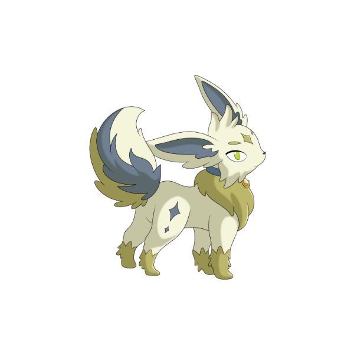
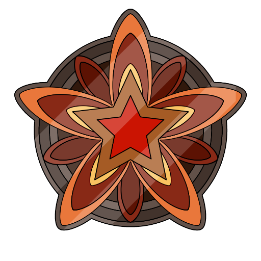
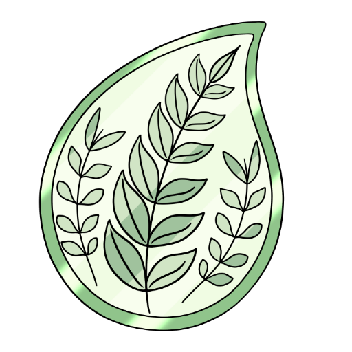
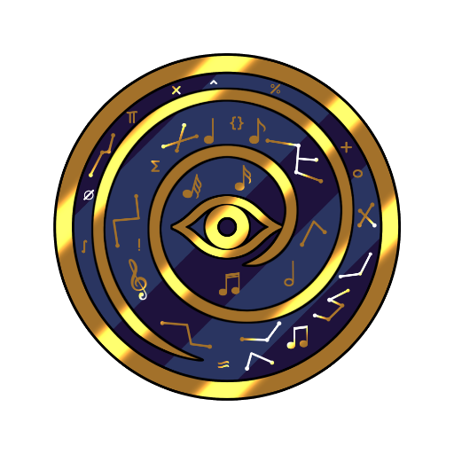
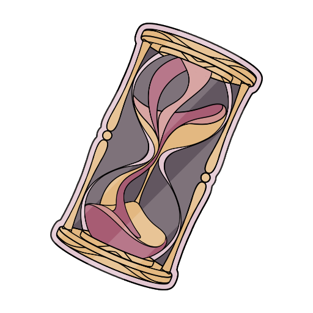
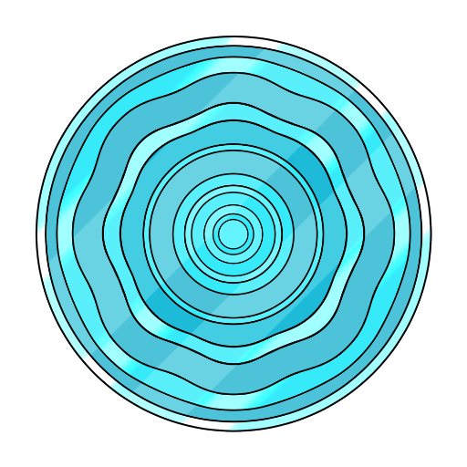
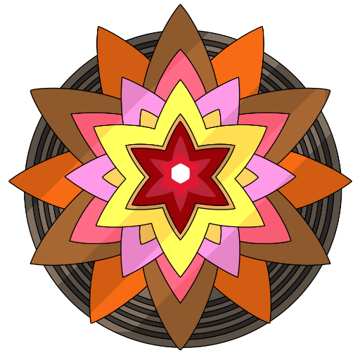

SATURNO
Neurosviluppo
Costruire il tempo, plasmare il divenire.
GLI ABITANTI DEL MIO SATURNO

Silen
La forma di Silen che segue i cicli della crescita.
Nella sua forma saturniana segue i cicli lenti della crescita: le menti che crescono troppo in fretta, i sensi che percepiscono troppo, le strade che non riescono a scegliersi. Neurosviluppo e asincronie, perché ogni tempo ha la sua dignità.OGNI LUNA UN CICLO DELLA CRESCITA
Ogni luna di Saturno accompagna un passo del neurosviluppo: i talenti, i sensi, i tempi diversi.
Esplora le schede dedicate alle asincronie della crescita, senza fretta e senza confronti.
Ogni scheda ha due voci: Cos'è, la spiegazione chiara, e La luna racconta, la voce del progetto. Divulgazione: non sostituisce il parere di un professionista. Le storie stanno nei libri.

Multipotenzialità
Troppe strade, tutte vere.
Una persona multipotenziale ha interessi e talenti in molte aree e impara rapidamente cose nuove. Non è un disturbo né mancanza di concentrazione: è un modo di essere che fiorisce quando può collegare discipline diverse.
Questa illustrazione è riprodotta su calamite, spille e adesivi.
Vai su Redbubble
Persona Altamente Sensibile
Sentire il mondo con la pelle dell'anima.
La persona altamente sensibile (PAS) percepisce e elabora gli stimoli con più profondità: emozioni, dettagli, atmosfere. Non è una patologia: è un tratto studiato dalla ricerca, che comporta insieme vulnerabilità e ricchezza percettiva.
Questa illustrazione è riprodotta su calamite, spille e adesivi.
Vai su Redbubble
Plusdotazione
Una mente che chiede orizzonti più ampi.
La plusdotazione indica capacità intellettive nettamente sopra la media, spesso accompagnate da intensità, curiosità e pensiero divergente. Non significa solo andare bene a scuola: senza riconoscimento e stimoli adeguati può portare noia, isolamento e sofferenza.
Questa illustrazione è riprodotta su calamite, spille e adesivi.
Vai su Redbubble
Sviluppo Asincrono
Crescere a velocità diverse.
Nello sviluppo asincrono le aree crescono a velocità diverse: una persona può ragionare molto oltre la propria età ed emotivamente restare della propria età. È tipico della plusdotazione: non è incoerenza, è uno sviluppo non allineato che chiede comprensione.
Questa illustrazione è riprodotta su calamite, spille e adesivi.
Vai su Redbubble
Iperreattività Sensoriale
Il mondo arriva a volume pieno.
L'iperreattività sensoriale significa che alcuni stimoli — luci, suoni, tessuti, profumi — arrivano troppo forti, o troppo deboli. Non è esagerare: è un sistema nervoso che elabora gli input in modo diverso, e conoscere i propri limiti aiuta a proteggere le energie.
Questa illustrazione è riprodotta su calamite, spille e adesivi.
Vai su Redbubble
Doppia Eccezionalità
Due luci nella stessa orbita.
La doppia eccezionalità (2e) indica la compresenza di plusdotazione e di una condizione come l'autismo, l'ADHD o una difficoltà specifica dell'apprendimento. I due aspetti si mascherano a vicenda: il talento fa dimenticare la fatica, e la fatica copre il talento.
Questa illustrazione è riprodotta su calamite, spille e adesivi.
Vai su RedbubbleINFORMAZIONI E LICENZE
Una Voce Dal Profondo è un progetto di divulgazione psicologica e narrazione. Le opere sono tutelate da diritto d'autore: i libri escono su Amazon e le illustrazioni sono riprodotte su oggetti da Redbubble — entrambe le piattaforme gestiscono la vendita e mi corrispondono le royalties. Per collaborazioni, richieste professionali o licenze:
Iscriviti alla nostra mailing list
Novità su libri, storie e nuove lune: qualche email, mai di più.
Se il modulo qui sopra non funziona, apri l'iscrizione in una nuova scheda
Ogni riproduzione non autorizzata è vietata.